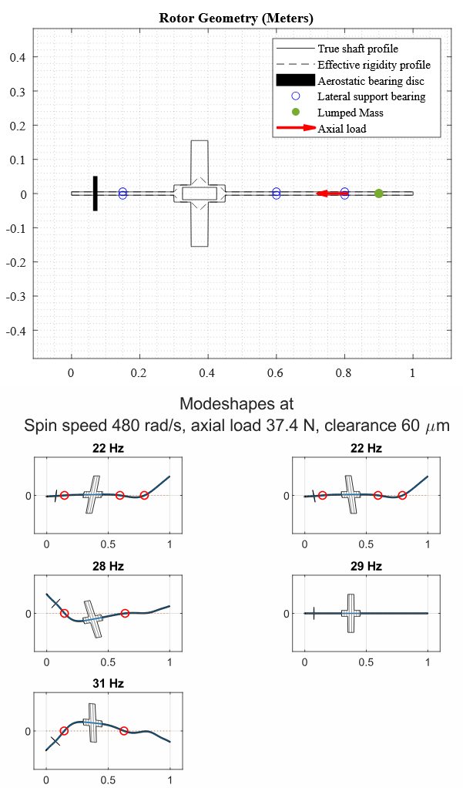
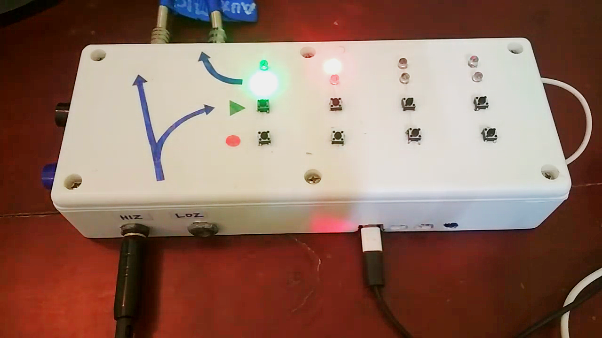
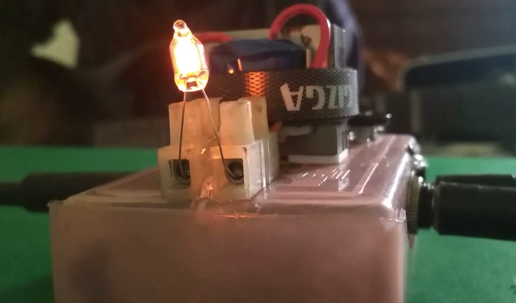
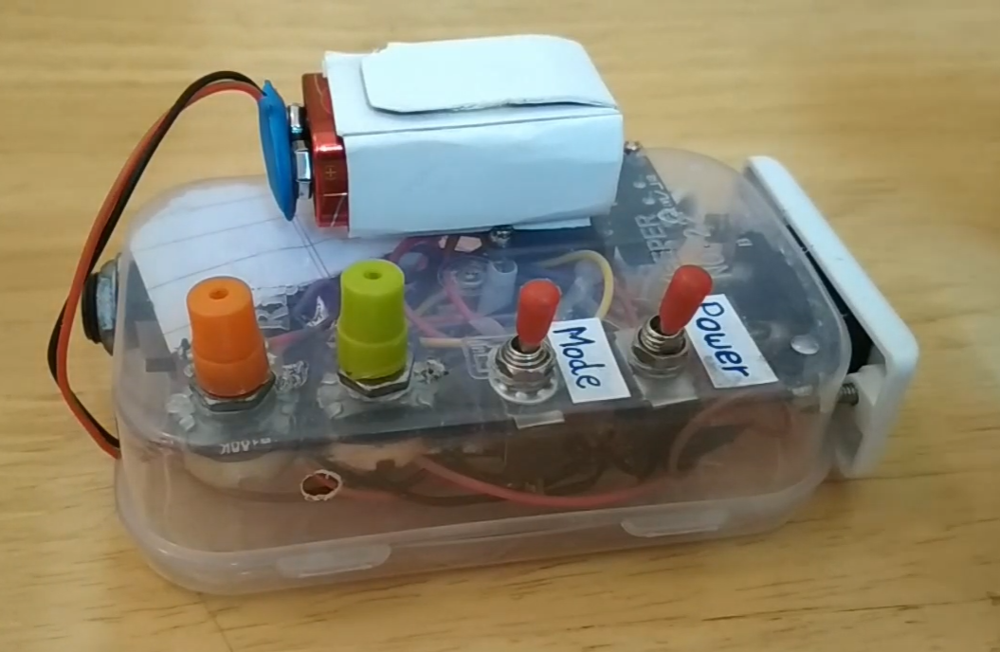
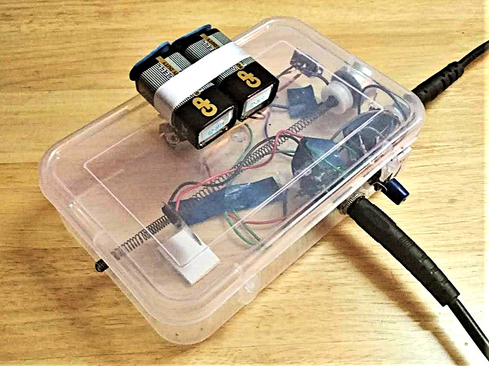

Some Projects From Work, Home, and School
Riju Chatterjee
Undergraduate Thesis: Developing a Semi-Analytical Model for High-Speed Rotor Whirl Prediction
 Most fully analytical treatments of rotor whirl are restricted to very simple rotor
geometries, and have limited use while studying real-world rotors. Analysis of more
complex rotors is routinely carried out in Finite Element software such as Ansys, but
this is less effective at generating fundamental insights to inform the design process.
This thesis develops a rotor whirl model of intermediate complexity, following some analytical insights into whirling resonance in rotors.
Most fully analytical treatments of rotor whirl are restricted to very simple rotor
geometries, and have limited use while studying real-world rotors. Analysis of more
complex rotors is routinely carried out in Finite Element software such as Ansys, but
this is less effective at generating fundamental insights to inform the design process.
This thesis develops a rotor whirl model of intermediate complexity, following some analytical insights into whirling resonance in rotors.
https://randomvertebrate.github.io/pdfs/btech-thesis.pdf
https://youtu.be/lfDOsH-XRDQ?si=4RnY2pM2A4v9WnY3
Whirl in Rotors on Aerostatic Thrust Bearing

This is a MATLAB tool to perform modal rotordynamic analysis for homogenous isotropic axysymmetric rotors of stepped or arbitrary profile supported laterally by multiple short bearings with linear compliance and axially by an aerostatic thrust bearing. The axial load from the pressure integral over an impeller or turbine is transmitte through the rotor shaft and the aerostatic bearing to the stator. Nonlinear constitutive relations for the bearing are estimated by fitting a modified power law to simulation data, and local lineaarizations are then used to derive the dynamics at various load and gap values.
https://github.com/RandomVertebrate/RotorWhirl
Multi-Track Audio Looper

This is a multi-track overdub audio looper for music performance, powered by a Raspberry Pi Single Board Computer and intended as an affordable DIY alternative to expensive dedicated looping hardware from companies such as BOSS.
https://github.com/RandomVertebrate/raspi-looper
https://youtu.be/S_rkdmCzIO0?si=m3swUJ6qcLQ3zeq6
https://youtu.be/qJmH_cdYRFU?si=2XOg9f2Z1C_yqnSP
Pipe Wrapping
 A straight strip of material (e.g. tape) can be wrapped helically around a straight length of pipe. This is not the case for pipes with bends. This is a tool I wrote to calculate a shape of strip that can be wrapped around a given pipe with arbitrary bends.
A straight strip of material (e.g. tape) can be wrapped helically around a straight length of pipe. This is not the case for pipes with bends. This is a tool I wrote to calculate a shape of strip that can be wrapped around a given pipe with arbitrary bends.
https://randomvertebrate.github.io/pdfs/pipe-wrap.pdf
https://github.com/RandomVertebrate/PipeWrapper
Simulation of Blood Flow in Mechanical Heart Valve Prostheses
 Various designs exist for Mechanical Heart Valves, but each of them has significant differences in operation from a natural heart valve. This paper (presented at BIT Mesra's internal thermo-fluids conference ICTFSD 2022) considers representative examples of a few popular classes of MHV, and presents FEM simulations of the flow through them in vitro. A comparison is made between the simulation results for each type of valve with a focus on factors contributing to clotting - including flow velocity, shear stress and
stagnation - as well as on leakage or regurgitation. A simulation-based insight is therefore developed for the relative strengths and weaknesses of each type of valve, and this insight is discussed in the context of common practices in the
medical field.
Various designs exist for Mechanical Heart Valves, but each of them has significant differences in operation from a natural heart valve. This paper (presented at BIT Mesra's internal thermo-fluids conference ICTFSD 2022) considers representative examples of a few popular classes of MHV, and presents FEM simulations of the flow through them in vitro. A comparison is made between the simulation results for each type of valve with a focus on factors contributing to clotting - including flow velocity, shear stress and
stagnation - as well as on leakage or regurgitation. A simulation-based insight is therefore developed for the relative strengths and weaknesses of each type of valve, and this insight is discussed in the context of common practices in the
medical field.
https://randomvertebrate.github.io/pdfs/heart-valves.pdf
Rolled-Metal Lamp Wick
 This was my project submission for a graduate Microfluidics course. My idea was to create a combination of macro and micro-channels between successive layers of rolled sheet metal. The result is a working metal lamp wick with several tweakable design parameters. I tested a few different wicks and commented on the effects of packing tensity, taper, and mouth profile on various aspects of performance or flame behavior.
This was my project submission for a graduate Microfluidics course. My idea was to create a combination of macro and micro-channels between successive layers of rolled sheet metal. The result is a working metal lamp wick with several tweakable design parameters. I tested a few different wicks and commented on the effects of packing tensity, taper, and mouth profile on various aspects of performance or flame behavior.
https://randomvertebrate.github.io/pdfs/spiral-wick.pdf
Neon Lamp Distortion

Gas discharge chambers show complicated electrical behavior, such as strong nonlinearity and hysteresis. This device boosts the voltage level of an audio signal using an amplifier and transformer to the levels required to start conduction in a small noble-gas indicator lamp, thus distorting the signal in interesting and musically useful ways difficult to achieve using solid-state electronics.
https://youtu.be/BmYvxnKo2pA?si=knCAEEGq7v0nR1TA
Vaccum Tube + Solid State Hybrid Desktop Guitar Amplifier
 This is a desktop guitar amplifier with a vaccum tube preamp stage and a solid state class A/B power stage, combining the musically desirable harmonic distortion and dynamic envelope of vacuum tubes with the superior efficiency and reduced cost of solid state amplification and power conversion.
This is a desktop guitar amplifier with a vaccum tube preamp stage and a solid state class A/B power stage, combining the musically desirable harmonic distortion and dynamic envelope of vacuum tubes with the superior efficiency and reduced cost of solid state amplification and power conversion.
https://youtu.be/4GiXes_CwNs?si=vOg285gTZzw3uBAk
Auto-Advance Mechanical Pencil Poster
 Auto-advance mechanical pencils dispense just the right amount of lead as they write, simultaneously protecting the lead from breaking and eliminating the need to manually click or shake the pencil as the lead wears out. When I first found out about these pencils, I was fascinated by what they did but couldn't find much information about how they worked. One source I did find seemed to describe a different mechanism from what I found in pencils I bought. I therefore took one apart and attempted a "reverse-engineered" poster explaining the mechanism.
Auto-advance mechanical pencils dispense just the right amount of lead as they write, simultaneously protecting the lead from breaking and eliminating the need to manually click or shake the pencil as the lead wears out. When I first found out about these pencils, I was fascinated by what they did but couldn't find much information about how they worked. One source I did find seemed to describe a different mechanism from what I found in pencils I bought. I therefore took one apart and attempted a "reverse-engineered" poster explaining the mechanism.
https://randomvertebrate.github.io/pdfs/auto-pencil.pdf
Internship Report, Hector Beverages
 These are reports I submitted during my internship at Hector Beverages. One of my assignments there the design of a bottle cap intended to help customers pierce the hermetic seal on 200ml coconut water bottles. Another was the design and testing of a catch-tray to help manage drink pouches during assembly.
These are reports I submitted during my internship at Hector Beverages. One of my assignments there the design of a bottle cap intended to help customers pierce the hermetic seal on 200ml coconut water bottles. Another was the design and testing of a catch-tray to help manage drink pouches during assembly.
https://randomvertebrate.github.io/pdfs/hector.pdf
Urban Pocketknife Design
 This is a conceptual design for a pocketknife suitable for Every Day Carry in urban or semi-urban environments. It is intended to be functional and serviceable, yet non-threatening and inconspicuous.
This is a conceptual design for a pocketknife suitable for Every Day Carry in urban or semi-urban environments. It is intended to be functional and serviceable, yet non-threatening and inconspicuous.
https://randomvertebrate.github.io/pdfs/knife-writeup.pdf
Line-of-Sight Stabilization Gyroscope
 Line-of sight stabilization for optical devices mounted on moving vehicles can be performed using correcting mirrors coupled to a gimballed gyroscope through a 1:2 kinematic coupling. In such a system, the dependence of the response on forcing can be shown to scale with the inertia of the mirror, marking an important difference in dynamic behavior from free-gimballed gyroscopes. This is a study through numerical dynamic simulations of the error in line-of-sight correction in such a system, i.e. its performance, as affected by design parameters and the frequency and amplitude of forcing.
Line-of sight stabilization for optical devices mounted on moving vehicles can be performed using correcting mirrors coupled to a gimballed gyroscope through a 1:2 kinematic coupling. In such a system, the dependence of the response on forcing can be shown to scale with the inertia of the mirror, marking an important difference in dynamic behavior from free-gimballed gyroscopes. This is a study through numerical dynamic simulations of the error in line-of-sight correction in such a system, i.e. its performance, as affected by design parameters and the frequency and amplitude of forcing.
https://randomvertebrate.github.io/pdfs/los-gyro.pdf
Audio-Reactive Light Switch

This is a light switch that can be set to turn ON or OFF when audio signal is louder than a specified threshold, for flickering stage lights that respond to the loudness of the music or an instrument.
https://youtu.be/tsPuhO7EOPA?si=__Rcn0SBk7yjkQ1u
Customizable Signal Distortion
 This is a customizable signal distortion unit with endless possibilities for guitar sounds through choosing and arranging nonlinear conductors in the feedback loop of an amplifier circuit.
This is a customizable signal distortion unit with endless possibilities for guitar sounds through choosing and arranging nonlinear conductors in the feedback loop of an amplifier circuit.
https://youtu.be/pKXopgA_Hso?si=OI_Og3wGE2An08kN
Distorted Spring Reverb

This adds distortion and reverberation to a guitar signal by injecting it into a length of springy heating element using a casette motor as a transducer, and then probing the signal using a piezo disc.
https://youtu.be/GU103KdSxRo?si=szYfDXkSsJa8gCng
Other Music/Electronics Projects
A YouTube playlist of some music-related electronics projects:
https://youtube.com/playlist?list=PLjhVaIf6OU6LDlmcNYBKtVTPVZbnjHjDZ&si=MS_KdJI_iD0e9jqG